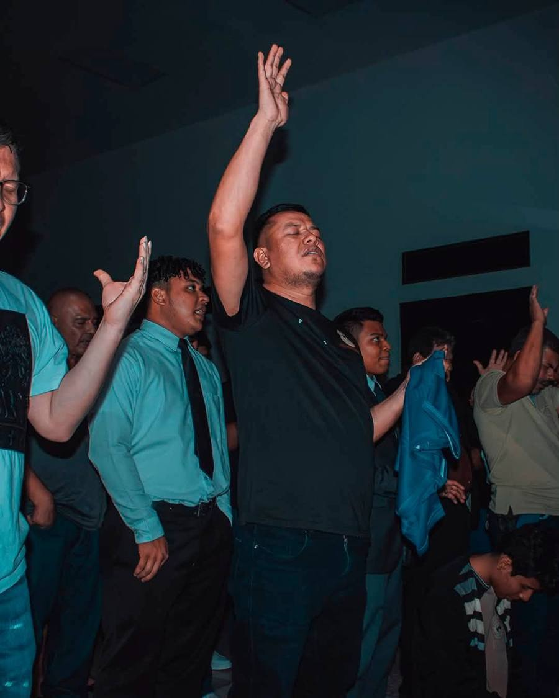
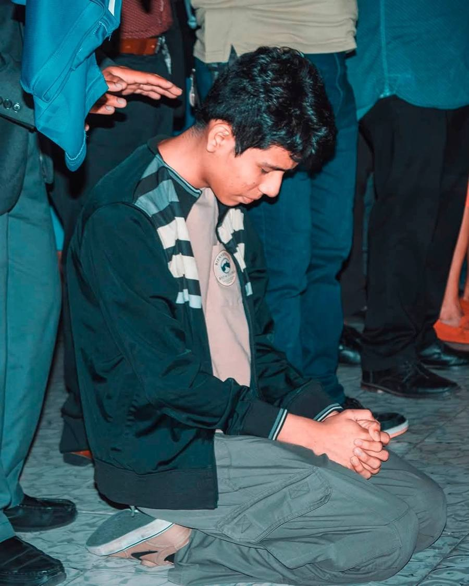
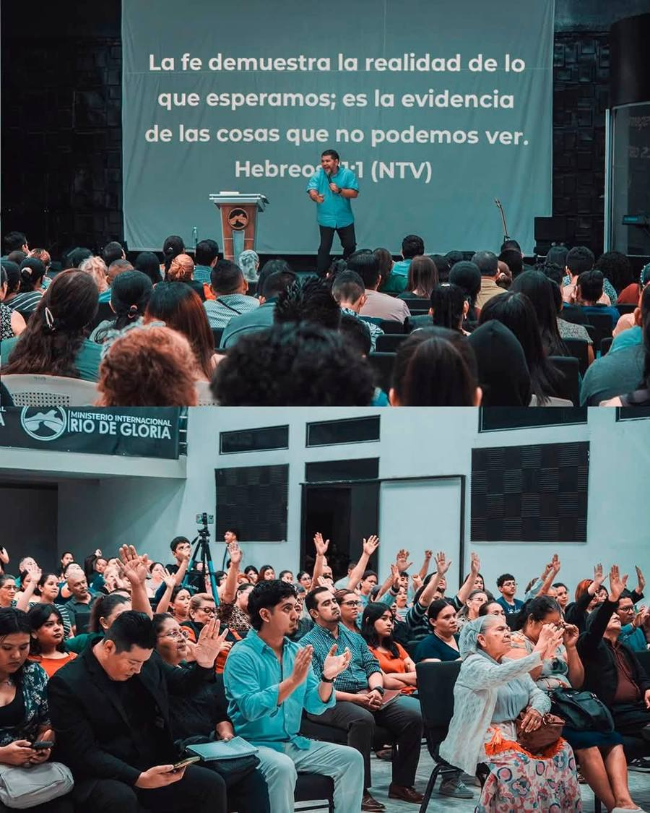
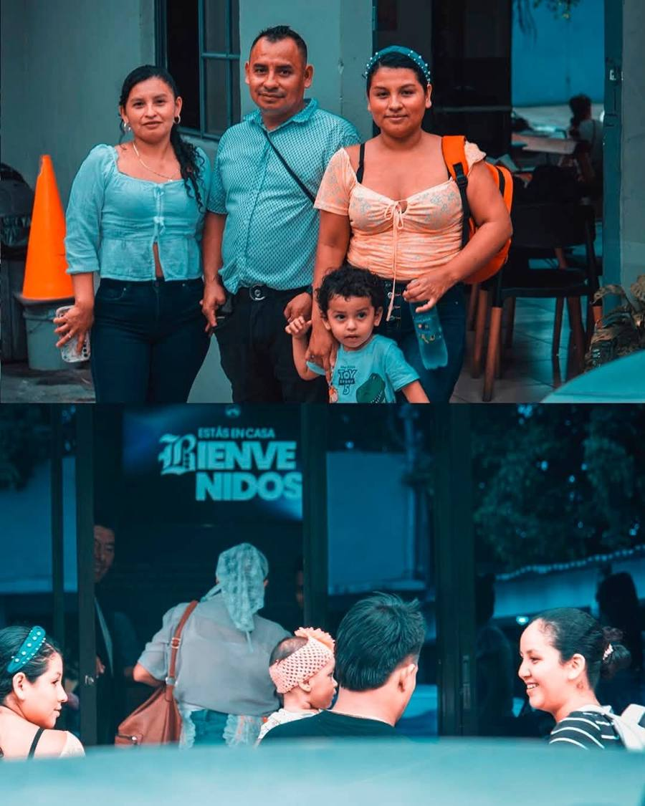
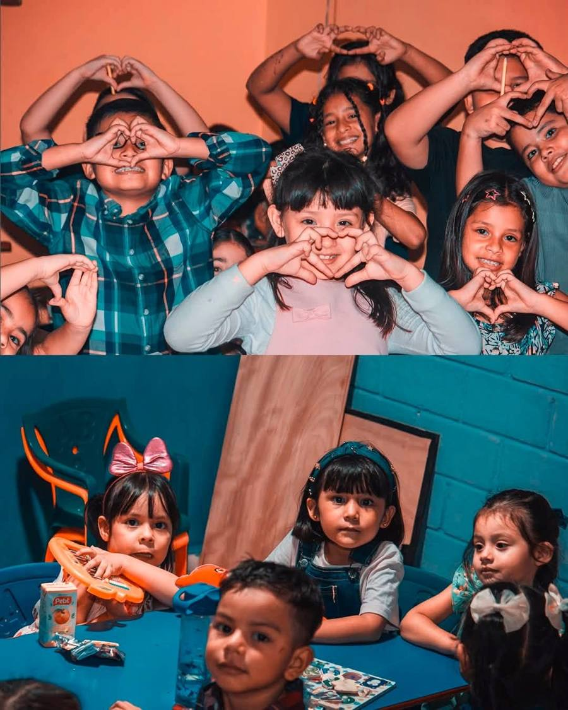
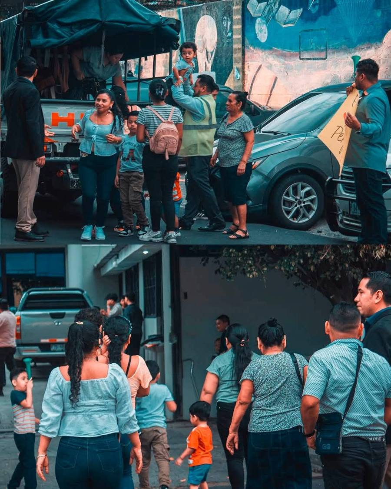

Qué vivirás
Así son estos tiempos
Fe en la Palabra
Nuestro pastor comparte un mensaje de la Biblia, con los pasajes en pantalla para que todos puedan seguirlo.
Oración y ministración
Oramos unos por otros y por cada necesidad, con tiempo para recibir oración personal.
Una casa para la familia
Recibimos con cariño a grandes y pequeños. Los niños también tienen su propio espacio.
Galería
Momentos de fe






Ven y vive estos tiempos con nosotros
19 Calle Poniente, entre 1 y 3 Avenida Norte, #232. Barrio San Miguelito, San Salvador.